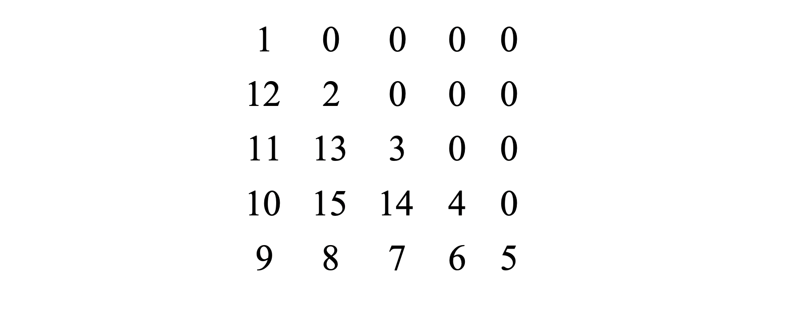
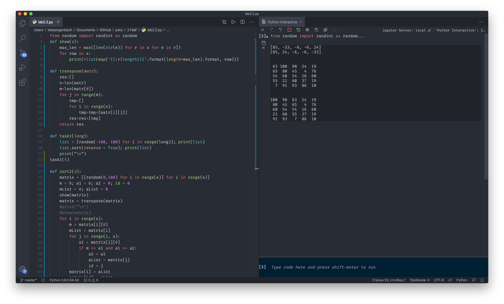
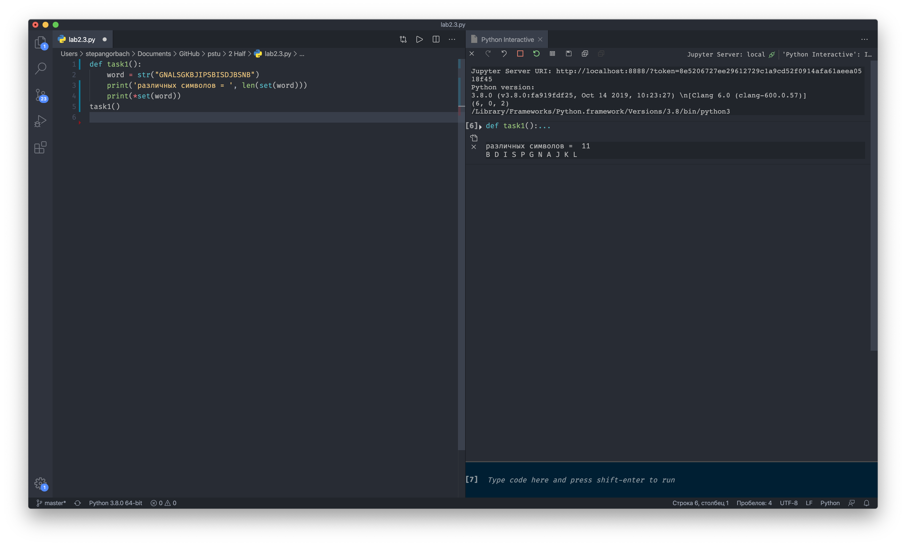

модуль 1: python
1. Обработка массивов
1. Поменять порядок следования элементов одномерного массива на обратный.
2. В одномерном массиве с четным количеством элементов (2N) находятся координаты N точек плоскости. Они располагаются в следующем порядке: x1, y1, x2, y2, x3, y3 и т.д. Определить номера точек, которые могут являться вершинами равнобедренного треугольника.
3. Составить программу, которая заполняет квадратную матрицу порядка n натуральными числами 1, 2, 3, ..., n2 записывая их в нее "по спирали". Например, для получаем следующую матрицу:
python file
2. cортировка массивов
1. Сортировка выбором. . Дана последовательность чисел a1, a2, ..., an. Требуется переставить элементы так, чтобы они были расположены по убыванию. Для этого в массиве, начиная с первого, выбирается наибольший элемент и ставится на первое место, а первый – на место наибольшего. Затем, начиная со второго, эта процедура повторяется. Написать алгоритм сортировки выбором.
2. Вышеописанным алгоритмом отсортировать столбцы квадратной матрицы по возрастанию элементов первой строки.
python file
3. работа со строками
1. Дана символьная строка. Преобразовать ее, удалив каждый символ «*» и повторив каждый символ, отличный от «*».
2. Дана символьная строка. Подсчитать количество различных символов в ней. Вывести их на экран.
python file
4. работа с типизированными файлами
1. Записать в файл N произвольных натуральных чисел. Переписать в другой файл те элементы, которые кратны k. Вывести полученный файл на печать.
2. Заполнить файл f целыми числами, полученными с помощью генератора случайных чисел. Из файла f получить файл q, исключив повторные вхождения чисел. Порядок следования чисел изменить на обратный.
zip archive
5.работа с текстовыми файлами
1. Дан файл, содержащий текст. Провести частотный анализ текста, т.е. указать (в процентах) сколько раз встречается та или иная буква.
2. Дан текстовый файл. Создать новый текстовый файл, записав в него те строки исходного файла, которые начинаются с символа k.
zip archive
модуль 1: access
Работа с базами данных
я не знаю что тут написать ¯\_(ツ)_/¯
microsoft access data base